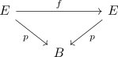

deck acting covering like
Proposition
Let $B$ be a topological space, $p: E \rightarrow B$ a connected covering. Then the deck group canonically acts covering-like on $E$
Proof
Let $e \in E$, then choose an open neighbourhood $U$ which restricts to a homeomorphism $p_{\vert U}: U \rightarrow V \subseteq B$ let $f \in \mathrm{Deck}(p)$, such that $x \in f[U] \cap U$. Then there exists an $y \in U$ such that
\begin{align*}
f(x) = y
\end{align*}
furthermore, by commutativity of

it holds, that
\begin{align*}
p(y) =& p(f(x)) \\
=& p(x)
\end{align*}
and since $p$ is a homeomorphism especially also injective, thus $y = x$
Since the deck action from a connected space is a free action, we conclude, that $f = \mathrm{id}_{E}$, hence acting covering like